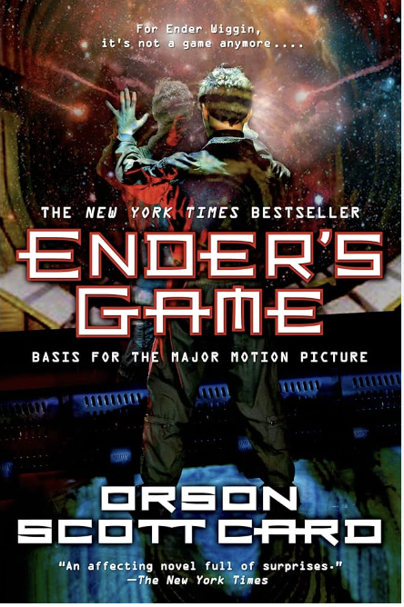

Ender's Game: Peter's Influence
In Ender's Game by Orson Scott Card, Ender Wiggin's fear of his older brother,
Peter, allows him to grow into a more compassionate and caring person. Throughout the novel,
Ender struggles with the prospect of becoming like Peter, who is manipulative and sociopathic.
Each time Ender thinks he is acting like Peter, it evokes distress at the idea of resembling his
brother. As he reflects on the way he defended himself from bullies, Ender acknowledges that"[he is]
Peter. [He is] just like him. And he hated himself," highlighting the internal conflict he faces (Card 33).
It is the fear of inheriting his brother's violent tendencies that drives Ender to make a vow never to be like Peter.
This vow, born out of fear, propels Ender towards understanding and love. As he reflects on his enemies,
the buggers, Ender expresses that "when [he] truly [understood his] enemy…[he] also loved him," recognizing
the complexity of empathy (Card 238). The sentiment of loving someone even when they opposed him underscores
Ender's profound transformation. He learns to empathize with others and becomes compassionate, the complete
opposite of Peter. His constant fear of Peter motivates him to steer away from darkness and towards a path
shaped by compassion and understanding.
